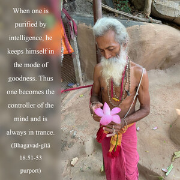
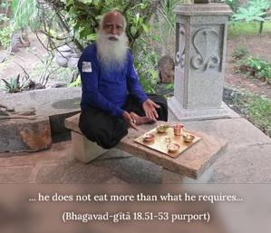

Being purified by his intelligence and controlling the mind with determination, giving up the objects of sense gratification, being freed from attachment and hatred, one who lives in a secluded place, who eats little, who controls his body, mind and power of speech, who is always in trance and who is detached, free from false ego, false strength, false pride, lust, anger, and acceptance of material things, free from false proprietorship, and peaceful – such a person is certainly elevated to the position of self-realization.


When one is purified by intelligence, he keeps himself in the mode of goodness. Thus one becomes the controller of the mind and is always in trance. He is not attached to the objects of sense gratification, and he is free from attachment and hatred in his activities. Such a detached person naturally prefers to live in a secluded place, he does not eat more than what he requires, and he controls the activities of his body and mind. He has no false ego because he does not accept the body as himself. Nor has he a desire to make the body fat and strong by accepting so many material things. Because he has no bodily concept of life, he is not falsely proud. He is satisfied with everything that is offered to him by the grace of the Lord, and he is never angry in the absence of sense gratification. Nor does he endeavor to acquire sense objects. Thus when he is completely free from false ego, he becomes nonattached to all material things, and that is the stage of self-realization of Brahman. That stage is called the brahma-bhūta stage. When one is free from the material conception of life, he becomes peaceful and cannot be agitated. This is described in Bhagavad-gītā (2.70):
āpūryamāṇam acala-pratiṣṭhaṁ
samudram āpaḥ praviśanti yadvat
tadvat kāmā yaṁ praviśanti sarve
sa śāntim āpnoti na kāma-kāmī
“A person who is not disturbed by the incessant flow of desires – that enter like rivers into the ocean, which is ever being filled but is always still – can alone achieve peace, and not the man who strives to satisfy such desires.”